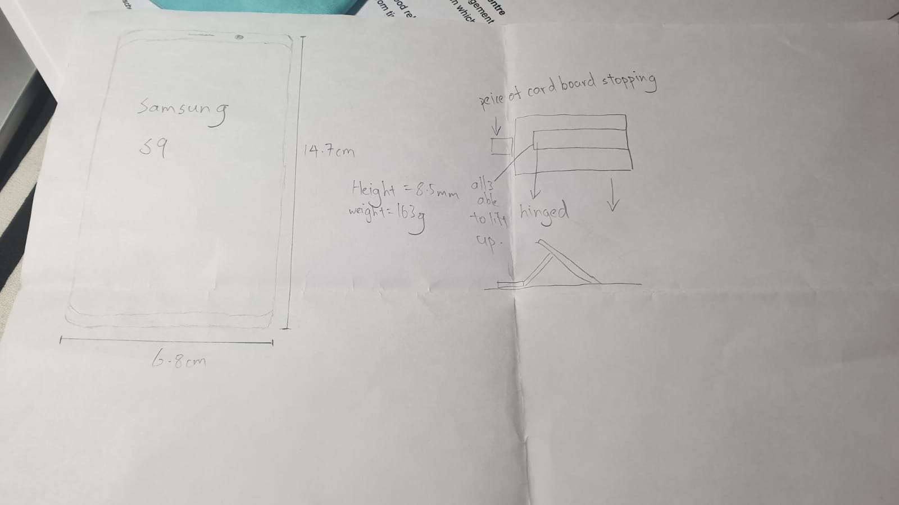
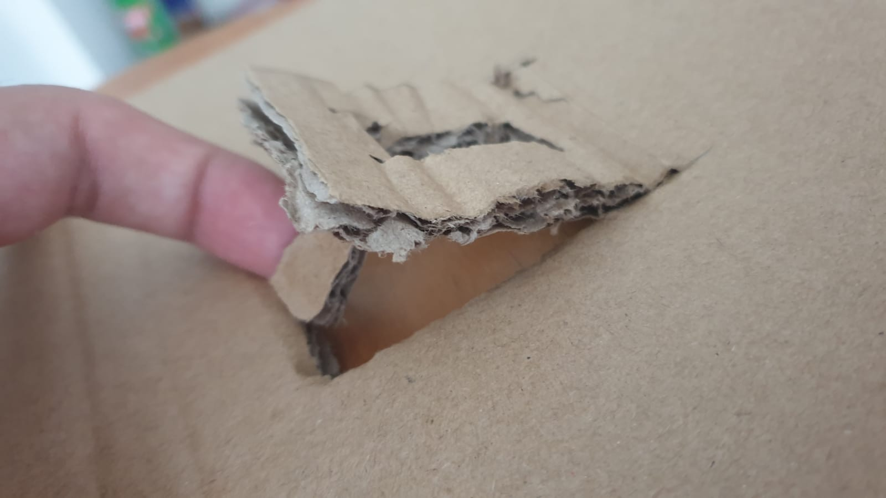
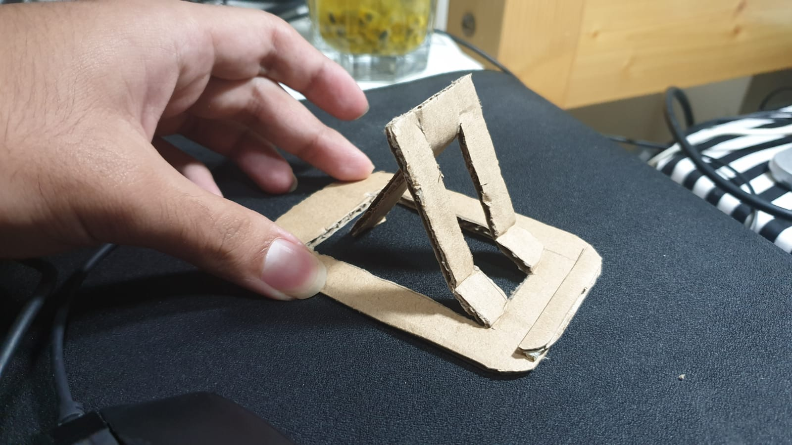

Documentation for week 2
Prototyping
The Fablab in SP has a large number of tools, equipment and machinery which we can use to fabricate our projects with. As part of the module, we would need to use the aforementioned machinery and thus we will need to learn how to operate the different machinery, tools and equipment safely
|  |
My hand sketch protoype for a phone stand.the main idea behind this is that the phone stand is only 1 layer of cardboard made up of 3 pieces of cardboard that can be folded up to support the phone and can also be folded back so as to be more compactable. Below you can see my first prototype of my phone stand |
|  |
My first protoype for the phone stand.From this prototype, I learnt alot about what I have to change in my design.
|
|  |
My final protoype for the phone standIt's really sturdy and looks great on my table! I used a sturdier cardboard from a vitamin drink box and aligned the wedges perfectly! click here to see more pictures! (Samsung S9 for reference) |